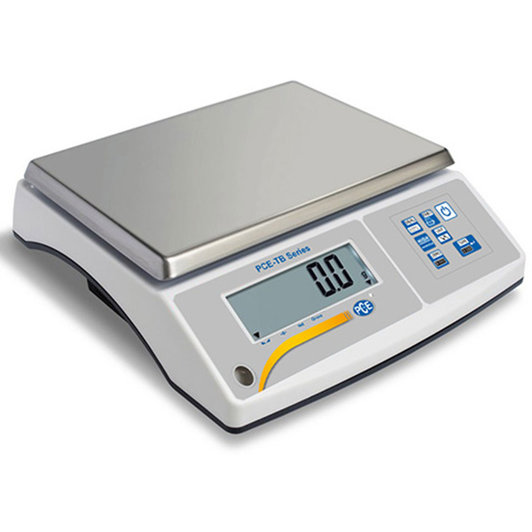
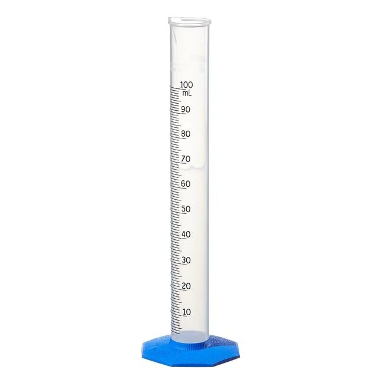

Medição Em Química
Tipos De Medições:
Direta:
Que consiste em uma medição sem necessitar de nenhuma conta matemárica (em aparelhos analógico se acrescenta um dígito duvidoso).

Ex: Medição de Massa
Indireta:
Que consiste em uma medição com necessidae de alguma conta matemática.

Ex: Medição de quantas moles tem a molécula de H₂O.
Exatidão E Precisão:
Para termos mais certeza do valore obtido, repetimos as medições algumas vezes e fazemos a media dos valores e com essa media podemos confirmar o quanto foi preciso os valores obtidos e exatidão com o valor real.
Exatidão:
É a proximidade com o valor real e pode se calculado usando Erro.

É a media dos valores menos o valor real dividido por o valore real e porfim vezes 100 para dar em %.
Precisão:
É a proximidade com os valores obtidos e pode ser verificado calculando a incerteza de medição que pode ser absoluta ou relativa.
primeiro calculamos o desvio que é o valor obtido menos a media dos valores obtidos para todos os valores (desvio) e depois com o maior desvio virá o incerteza absoluta e a incerteza relativa é incerteza absoluta a dividir por a media dos valores obtidos vezes 100.
Algarismos Significativos:
Regras de contagem:
- Todos os algarismos diferentes de 0 são algarismos significativos;
- Os zeros à esquerda não são algarismos significativos;
- Os zeros à direita, ou intervalados entre outros algarismos, são algarismos significativos;
- O número de algarismos significativos deverá manter-se independentemente da unidade e de como se escreve esse número (com ou sem notação científica).
Regras de contagem nas operações:
- Nas operações de soma ou subtração, o resultado deve sempre conter a quantidade de casas decimais do número que possui a menor quantidade de dígitos.
- Nas operações de divisão ou multiplicação o resultado deve sempre conter a quantidade de algarismos significativos do número que possui menor quantidade de dígitos.
Ex:
- 1,23 cm – (tem 3 algarismos significativos)
- 0,15 cm – (tem 2 algarismos significativos)
- 2,00 ml – (tem 3 algarismos significativos)
- 5,034 s – (tem 4 algarismos significativos)
- 345,60 cm = 3,4560 × 10-2 m – (tem 5 algarismos significativos)
Ex:
- 0,257 + 0,56 = 0,817 = 0,82
- 0,24 · 75,2 = 18,048 = 18
Incerteza De Leitora (aparelho):
Ex:0.1G
Digital:
É feita pela menor divisão do aparelho.
Ex:0.5Ml
Analogico:
É feita pela metade da menor divisão do aparelho.
Al-1.1 Mass, volume e nº de moléculas numa gota de água.
Objectivo do experimento laboratorial:
Com este experimento pretendesse descobrir e comparar, entre os alunos, a massa volume e nº de moléculas numa gota de água.